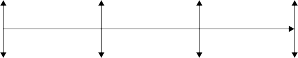
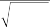
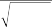
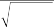

weight them, making sure the signs are correct.17 Since the portfolio manager believes that higher P/E, P/B, and P/S ratios signal bad attributes of stocks, each individual Z-score is multiplied by —1 before adding them together, that is,
z 1 z z z
C S C O ,V 3 C SC O,P/E C SC O,P/B C SC O,P/S
1 39.14 27.03 5.60 4.54 8.31 2.67
(5.7)
3
3
3
40.24
8.03
3.33
3
3
3
1 0.30 0.13 1.69 0.709
Applying the same process to each factor group, we can cal- culate other factor group Z-scores for Cisco as well, i.e., the prof- itability Z-scores (zCSCO,P = 0.442), the financial-soundness Z-scores zCSCO,F = 1.685), and the technical Z-scores (zCSCO,T = 0.838). Cisco receives a very poor valuation rating owing in particular to its unusually high P/B ratio. It has an okay rating for profitability. It has a very strong rating for financial soundness, however, mainly because the company has no interest expenses, so its ICR reached
3. Cisco earns decent marks for M12M because relative to the
investment universe, its stock price has grown over the last year. With an aggregate Z-score of 0.564, Cisco is overall a relatively attractive stock as of December 2003, according to the set of criteria used in this example (see Table 5.4).
5.5 THE AGGREGATE Z-SCORE AND EXPECTED RETURN
5.5.1 Expected Return Implied by the Z-Score
Expected stock returns can be found from aggregate Z-scores by performing a regression of actual stock returns against the aggregate

17 Of course, alternative weighting schemes could be used.
T A B L E 5 . 4
159
159
159
Selected Factor Exposures and Group Z-Scores of Selected Stocks
Ticker | Valuation Composite | Profitability Composite | Financial Soundness Composite | Technical Composite | Valuation Composite Z-Score | Profitability Composite Z-Score | Financial Composite Z-Score | Technical Aggregate Composite Z-Score Z-Score | ||||
P/E | P/B | P/S | GPM ICR D/E M12M | |||||||||
AIG | 23.27 | 2.56 | 2.24 | 0.08 | 2.52 | 8.50 | —0.940 | 0.156 | 0.136 | —0.261 | —1.232 | —0.300 |
C | 15.47 | 2.84 | 2.64 | 0.15 | 1.63 | 11.65 | 1.817 | 0.169 | 0.319 | —0.437 | 0.037 | 0.022 |
XOM | 13.46 | 3.21 | 1.34 | 0.06 | 14.36 | 1.05 | 0.556 | 0.301 | 0.079 | 0.177 | —0.543 | 0.003 |
GE | 20.33 | 4.52 | 2.20 | 0.12 | 2.48 | 8.03 | 0.704 | 0.103 | 0.233 | —0.235 | —0.475 | —0.094 |
INTC | 48.61 | 6.18 | 8.19 | 0.12 | 38.11 | 0.25 | 4.058 | —0.799 | 0.235 | 0.275 | 1.068 | 0.194 |
IBM | 22.86 | 6.84 | 1.92 | 0.07 | 30.63 | 3.24 | 0.403 | 0.014 | 0.090 | 0.093 | —0.614 | —0.104 |
PFE | 58.89 | 12.84 | 7.91 | 0.28 | 33.91 | 1.32 | 0.685 | —1.134 | 0.709 | 0.206 | —0.484 | —0.176 |
WMT | 28.39 | 6.12 | 0.98 | 0.03 | 7.77 | 1.41 | 0.319 | 0.092 | —0.003 | 0.142 | —0.652 | —0.105 |
MSFT | 32.54 | 4.55 | 8.63 | 0.31 | N/A | 0.30 | —0.875 | —0.643 | 0.785 | 1.686 | —1.201 | 0.157 |
CSCO | 39.14 | 5.60 | 8.31 | 0.19 | N/A | 0.32 | 3.559 | —0.709 | 0.442 | 1.685 | 0.838 | 0.564 |
S&P 500 Mean | 27.03 | 4.54 | 2.67 | 0.03 | —0.02 | 3.67 | 1.737 | |||||
SD | 40.24 | 8.03 | 3.33 | 0.35 | 222.19 | 9.05 | 2.174 | |||||
Note: For ticker symbols, see the note to Table 5.2. All values are as of December 2003. The data were obtained from Compustat. Negative P/E and P/B ratio values were given a 0 value for purpos- es of computation. Some companies, such as CSCO and MSFT, had no interest expense for December 2003. Their ICR technically would be infinite. We gave them a Z-score of 3 for this attribute.
Z-scores. This can be done using a panel series regression of stock returns on the Z-score of the prior period (e.g., of the previous month). The regression would take the form
ri,t = i + zi,t—1 + Ei,t (5.8)
where i represents a constant term,18 is the coefficient that relates the aggregate Z-score to the stock return, and Ei,t is a typical error term. Given the estimate of i and , the expected return of stock i for time T + 1 can be written as (see Fig. 5.1)
E(ri,T+1) = i + zi,T (5.9) There are some problems with this methodology. First,
Z-scores may not change much from one period to another, but
factor premiums may change substantially. Thus one’s estimated coefficients may not be stable or reliable. One way to reduce this problem is to run panel regressions on a larger period of historical data rather than just one single cross-sectional regression over one particular period.19
The second problem is that there may be a low correlation between the Z-score and the subsequent returns. While we are using Z-scores at time t to predict stock returns at time t+1, the link might be rather weak because the equation is not based on a rigorous theory.
The third problem with this procedure is that it adds com- plexity to the process, which is a weakness given that the biggest strength of the aggregate Z-score model is its simplicity.
F I G U R E 5 . 1

Timeline.

t — 1
t — 1
t — 1
t
t
t
t + 1
t + 1
t + 1
Use zt — 1
Use rt
Use zt, t,
rt + 1

18 If a single-period cross-sectional regression were used instead of a panel series regression, then there would not be a for each stock; thus i would be replaced by .
19 Panel regressions consist of using a time series of cross-sectional data to estimate the
coefficients.
5.5.2 The Forecasting Rule of Thumb
Many portfolio managers are familiar with the forecasting rule of thumb and love to talk about it.20 We personally do not understand what makes this equation so exciting because it is essentially an algebraic manipulation of a simple regression equation. We will make a few comments about it, though, because it may have some limited use in QEPM.
One can manipulate Eq. (5.8) and obtain the following:
Erit zi,t1 Ert zi,t1 Ezt1
Crt , zt1 z
V zt1
i,t1
(5.10)
rt , zt1 Srt zi,t1
IC volatility score
In this equation, IC is by definition the correlation between the aggregate Z-score or raw signal and the actual security returns, the volatility in this particular case represents the cross-sectional volatility of the returns of the securities, and score refers to the aggregate Z-score.21
Although this is a neat formula, the portfolio manager should be sufficiently well versed in econometrics not to need this trans- formation of variables to make a connection between the raw scores or aggregate Z-score and the actual returns or residual returns of the security. This equation would be helpful if, for some reason, it were easier to compute IC and volatility than to run a regression. Otherwise, the equation does not add much to the screening process.22

20 This concept was popularized by Richard Grinold and Ronald Kahn.
21 Because E(zt—1) is zero and S(zt—1) = 1, we can achieve the second to last part of the derivation. This is so because the Z-score is already normalized.
22 The equation we present here differs from Grinold and Kahn’s original description because they use actual signals or raw forecasts prior to normalizing the variables. The actual regression of the returns on the raw signals or factors creates this equation where by definition the raw forecasts are normalized.
This is why regressions are convenient: You don’t have to normalize prior to estimating them. They normalize for you. It is therefore difficult to see the magic in this formula.
5.5.3 The Equivalence between the Z-Score Model and the Fundamental Factor Model
We can show that the Z-score model of Eq. (5.8) produces an expect- ed return identical to that of the fundamental factor model under certain conditions. Specifically, if the factor premium is inversely pro- portional to the standard deviation of the factor exposure, then the aggre- gate Z- score model produces the same result as the fundamental factor model.
Let us assume that the factor premium is inversely propor- tional to the standard deviation of the factor exposure. Let k be the exposure to the kth factor and fk be the premium on the kth factor.
Then
c
V k
V k
V k
fk
(5.11)
where c is a constant. Then the fundamental factor model can be rewritten as
ri i i,1 f1 i,K fK Ei
i c
i1
c
iK
Ei
(5.12)

V 1
V 1
V 1

V K
V K
V K
i czi Ei
i
i
i
where ~ is a constant defined as

V 1
V 1
V 1
i i c
E1
c
EN
(5.13)

V
V
V
N
N
N
Equation (5.12) shows the relationship between the parameters of the aggregate Z-score model and the parameters of the fundamental factor model.
Certain conditions may give rise to an inverse proportionality between the factor premium and the standard deviation of the factor exposure. When the factor exposure variation is large, even a small factor premium can affect the excess return tremendously. Thus, to preserve the overall excess return of the universe, it might make sense to have the factor premium be proportional to the inverse of the standard deviation of the factor exposure. This would imply that a factor with extremely high variation has a low factor premium, thus in some sense preserving the balance of excess return.